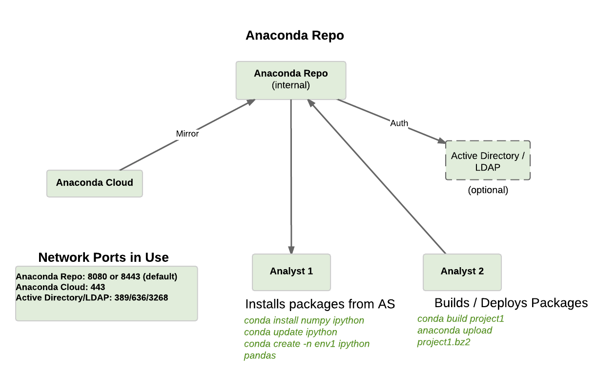

This following runbook walks through the steps needed to install Anaconda Repository. The runbook is designed for two audiences: those who have direct access to the internet for installation and those where such access is not available or restricted for security reasons. For these restricted a.k.a. “Air Gap” environments, Continuum ships the entire Anaconda product suite on portable storage medium or as a downloadable TAR archive. Additionally, Continuum provides a set of Air Gap TAR archives for those environments only needing certain platform architectures, such as 64-Bit Linux, 32-Bit Linux, etc. With the exception of 64-Bit Linux, these platform-based archives include all of the available packages for that platform. The 64-Bit Linux archive contains 64-Bit Linux packages PLUS packages neecessary to install Anaconda Repository.
Additional platforms can be added by downloading the corresponding TAR archive and importing it to the local Anaconda Repository. See the section titled “Optional: Installing from Platform-based Archives” below to prepare your environment before starting the Anaconda Repository Installation.
Where necessary, additional instructions for Air Gap environments are noted throughout this document. If you have any questions about the instructions, please contact your sales representative or Priority Support team, if applicable, for additional assistance.
Some Linux system accounts (UIDs) are added to the system during installation. If your organization requires special actions, here is the list of UIDs:
mongod (RHEL) or mongodb (Ubuntu/Debian) - Created by the RPM or deb packageanaconda-server: Created manually during installation, and configurable to other namesroot) access or sudo capabilities8080)iptables modificationsNote
SELinux does not have to be disabled for Anaconda Repo operation
| direction | type | port | protocol | optional | configurable | comments |
| inbound | TCP | 8080 | HTTP | yes | Anaconda Repository | |
| inbound | TCP | 22 | SSH | yes | ||
| outbound | TCP | 443 | HTTPS | yes | to Anaconda Cloud or secondary local Anaconda Repo | |
| outbound | TCP | 25 | SMTP | yes | email notifications | |
| outbound | TCP | 389/636 | LDAP(S) | yes | yes | authentication integration |
Assuming the above requirements are met, there are no additional dependencies necessary for Anaconda Repository.
As stated previously, this document contains installation instructions for two audiences: those with internet access on the destination server(s) and those who have no access to internet resources. Many of the steps below have two sections: Air Gap Installation and Regular Installation. Those without internet access should follow the Air Gap Installation instructions and those with internet access should follow Regular Installation instructions.
This document assumes that the air-gap media is available on the target server at $INSTALLER_PATH where the software is being installed.
There are two ways to obtain the air-gap installation assets:
A pen drive is over-nighted to client
Client downloads the latest archive tarball or component tarballs and expands the archive to
/installer.
Note
The $INSTALLER_PATH variable must be set to the location of the
air-gap media as displayed below. The $INSTALLER_PATH is the parent directory
to the anaconda-suite directory. See examples below:
For air-gap pen drive media mounted on /installer:
export INSTALLER_PATH=/installer
If the full anaconda installer is downloaded and expanded: anaconda-full-2016-07-11.tar:
tar xvf anaconda-full-2016-08-06.tar -C /installer/
export INSTALLER_PATH=/installer/scratch/anaconda-full-2016-07-11
The anaconda-full-2016-07-11.tar is roughly 200GB. If only a subset of components are required, refer to 1.2.3 Optional: Air Gap Platform-based Archives (Linux).
ls $INSTALLER_PATH
anaconda-cluster/
anaconda-suite/
mongodb-org-tools-2.6.8-1.x86_64.rpm
mongodb-org-shell-2.6.8-1.x86_64.rpm
mongodb-org-server-2.6.8-1.x86_64.rpm
mongodb-org-mongos-2.6.8-1.x86_64.rpm
mongodb-org-2.6.8-1.x86_64.rpm
R/
wakari/
To install Anaconda Repository and only mirror packages for a subset of platforms (eg. Linux-64); download a component based TAR archive. Using the 64-Bit Linux platform-based TAR archive to install Anaconda Repo is almost identical to the full install once we create the same file structure in $INSTALLER_PATH. A couple of things to note about platform based archives:
Each component has an md5 and list file which are both small and included more for convenience. Table below summarizes various components required for only installing AE-Repo and mirroring linux-64 packages. The top-level directory for all archives is: scratch/anaconda-full-`date +%Y-%m-%d/`
| Tarball | Contents | Size |
|---|---|---|
| anaconda-full-date +%Y-%m-%d.tar | All AE components and dependencies:
|
137 GB |
| linux-64-date +%Y-%m-%d.tar | All AE components and dependencies:
|
41 GB |
| win-64-date +%Y-%m-%d.tar |
|
27 GB |
| osx-64-date +%Y-%m-%d.tar |
|
25 GB |
Note
The channels: binstar, anaconda-adam, wakari, anaconda-server on contain linux-64 packages. The win-64/ and osx-64/ directories are included for completeness, they are only 16 KB in size and contain no packages.
As an example, if you only need AE-Repo, AE-N and linux-64 and win-64 packages, download linux-64-date +%Y-%m-%d.tar and win-64-date +%Y-%m-%d.tar. Also download the associated md5 files to check integrity of downloaded data. To run in background and continue download after logout, use nohup.
After downloading, expand the tarballs. It will take sometime to expand the archives.
Prior to installing Anaconda Repository components the following needs to be done by someone with sudo privileges
In a terminal window, create a new user account for Anaconda Repo named anaconda-server.
sudo useradd -m anaconda-server
Note
anaconda-server can be configured to any other service account name
sudo mkdir -m 0770 /etc/anaconda-server
sudo mkdir -m 0770 /var/log/anaconda-server
sudo mkdir -m 0770 -p /opt/anaconda-server/package-storage
sudo mkdir -m 0770 /etc/anaconda-server/mirrors
sudo chown -R anaconda-server. /etc/anaconda-server
sudo chown -R anaconda-server. /var/log/anaconda-server
sudo chown -R anaconda-server. /opt/anaconda-server/package-storage
sudo chown -R anaconda-server. /etc/anaconda-server/mirrors
Switch account, and set $INSTALLER_PATH environment variable correctly for your system.
sudo su - anaconda-server
INSTALLER_PATH=<set to path of air gap data>
Air Gap Installation: Skip this step.
Regular Installation:
curl 'http://repo.continuum.io/miniconda/Miniconda2-latest-Linux-x86_64.sh' > Miniconda.sh
Air Gap Installation:
bash $INSTALLER_PATH/anaconda-suite/miniconda/Miniconda2-latest-Linux-x86_64.sh
Regular Installation:
bash Miniconda.sh
Welcome to Miniconda (by Continuum Analytics, Inc.)
In order to continue the installation process, please review the license agreement.
Please, press ENTER to continue. Do you approve the license terms? [yes|no] yes
Miniconda will now be installed into this location:
/home/anaconda-server/miniconda2
-Press ENTER to confirm the location
-Press CTRL-C to abort the installation
-Or specify a different location below
[/home/anaconda-server/miniconda2] >>>" [Press ENTER]
PREFIX=/home/anaconda-server/miniconda2
Do you wish the installer to prepend the Miniconda install location to PATH in your /home/anaconda-server/.bashrc ?
[yes|no] yes
source ~/.bashrc
The following sections detail the steps required to install Anaconda Repo.
Air Gap Installation: Add the channels from local files.
conda config --add channels file://$INSTALLER_PATH/anaconda-suite/pkgs/
conda config --add channels file://$INSTALLER_PATH/anaconda-server/pkgs/
conda config --add channels file://$INSTALLER_PATH/binstar/pkgs/
conda config --remove channels defaults --force
Regular Installation: Add the channels from Anaconda Cloud.
export BINSTAR_TOKEN=<your binstar token>
export ANACONDA_TOKEN=<your anaconda-server token>
conda config --add channels https://conda.anaconda.org/t/$BINSTAR_TOKEN/binstar/
conda config --add channels https://conda.anaconda.org/t/$ANACONDA_TOKEN/anaconda-server/
Note
You should have received two tokens from Continuum Support, one for each channel. If you haven’t, please contact support@continuum.io. Tokens are not required for Air Gap installs.
Use conda to install mongodb locally for user: anaconda-server.
conda install mongodb=2.6.12
This will install mongodb in root conda environment of user: anaconda-server
which mongod
~/miniconda2/bin/mongod
Install packages for running AE-Repo server
conda install anaconda-client binstar-server binstar-static cas-mirror
Initialize the web server for Anaconda Repository
anaconda-server-config --init --config-file /etc/anaconda-server/config.yaml
Set the Anaconda Repository package storage location
anaconda-server-config --set fs_storage_root /opt/anaconda-server/package-storage \
--config-file /etc/anaconda-server/config.yaml
anaconda-server-install-supervisord-config.sh
This step:
writes a config file for supervisord in ~/miniconda2/etc/supervisord.conf
creates the following entry in the anaconda-server user’s crontab:
@reboot /home/anaconda-server/miniconda2/bin/supervisord
generates the /home/anaconda-server/miniconda2/etc/supervisord.conf file
Create a local directory for mongo to use for writing out its databases and logs.
$ mkdir -p ~/mongo/data && mkdir ~/mongo/log
Append following lines for mongo to ~/miniconda2/etc/supervisord.conf:
[program:mongo]
command=/home/anaconda-server/miniconda2/bin/mongod --dbpath /home/anaconda-server/mongo/data --logpath /home/anaconda-server/mongo/log/mongod.log --logappend --port 27017
stdout_logfile=syslog
stderr_logfile=syslog
Update the Supervisor process so it picks up the new config and runs the mongo process.
$ supervisorctl update
mongo: added process group
Verify the server and mongo is running:
$ supervisorctl status
binstar-scheduler RUNNING pid 8445, uptime 0:00:09
binstar-server RUNNING pid 8263, uptime 0:06:39
binstar-worker RUNNING pid 8253, uptime 0:06:39
binstar-worker-low:binstar-worker-low_00 RUNNING pid 8261, uptime 0:06:39
binstar-worker-low:binstar-worker-low_01 RUNNING pid 8260, uptime 0:06:39
binstar-worker-low:binstar-worker-low_02 RUNNING pid 8259, uptime 0:06:39
binstar-worker-low:binstar-worker-low_03 RUNNING pid 8258, uptime 0:06:39
binstar-worker-low:binstar-worker-low_04 RUNNING pid 8257, uptime 0:06:39
binstar-worker-low:binstar-worker-low_05 RUNNING pid 8256, uptime 0:06:39
binstar-worker-low:binstar-worker-low_06 RUNNING pid 8255, uptime 0:06:39
binstar-worker-low:binstar-worker-low_07 RUNNING pid 8254, uptime 0:06:39
mongo RUNNING pid 8451, uptime 0:00:05
anaconda-server-create-user --username "superuser" --password "yourpassword" \
--email "your@email.com" --superuser
Note
To ensure the bash shell does not process any of the characters in this password, limit the password to lower case letters, upper case letters and numbers, with no punctuation. After setup the password can be changed with the web interface.
anaconda-server-db-setup --execute
Visit http://your.anaconda.server:8080. Follow the onscreen instructions and upload your license file. Log in with the superuser user and password configured above. After submitting, you should see the login page.
Note
Contact your sales representative or support representative if you cannot find or have questions about your license.
Miniconda installers can be served by Anaconda Repository via the static directory located at /home/anaconda-server/miniconda2/lib/python2.7/site-packages/binstar/static/extras. This is required for Anaconda Cluster integration. To serve up the latest Miniconda installers for each platform, download them and copy them to the extras directory.
Users will then be able to download installers at a URL that looks like the following: http://<your host>:8080/static/extras/Miniconda3-latest-Linux-x86_64.sh
Set the URL variable correctly for AirGap vs Regular installs:
Air Gap Installation:
URL="file://$INSTALLER_PATH/anaconda-suite/miniconda/"
Regular Installation:
URL="https://repo.continuum.io/miniconda/"
Download the installers using curl, see sample below:
mkdir -p /tmp/extras
pushd /tmp/extras
versions="Miniconda3-latest-Linux-x86_64.sh \
Miniconda3-latest-MacOSX-x86_64.sh \
Miniconda3-latest-Windows-x86.exe \
Miniconda3-latest-Windows-x86_64.exe \
Miniconda-latest-Linux-x86_64.sh \
Miniconda-latest-MacOSX-x86_64.sh \
Miniconda-latest-Windows-x86.exe \
Miniconda-latest-Windows-x86_64.exe"
for installer in $versions
do
curl -O $URL$installer
done
# Move installers into static directory
popd
cp -a /tmp/extras \
/home/anaconda-server/miniconda2/lib/python2.7/site-packages/binstar/static
Now that Anaconda Repository is installed, we want to mirror packages into our
local repository. If mirroring from Anaconda Cloud, the process will
take hours or longer, depending on the available internet bandwidth. Use
the anaconda-server-sync-conda command to mirror all Anaconda
packages locally under the “anaconda” user account.
Note
Ignore any license warnings. Additional mirror filtering/whitelisting/blacklisting options can be found here.
Air Gap Installation: Since we’re mirroring from a local filesystem, some additional configuration is necessary.
Create a mirror config file:
echo "channels:" > /etc/anaconda-server/mirrors/conda.yaml
echo " - file://$INSTALLER_PATH/anaconda-suite/pkgs" >> \
/etc/anaconda-server/mirrors/conda.yaml
(Optional) If mirroring packages for subset of platforms (eg. linux-64 only as shown in 1.2.3 Optional: Air Gap Platform-based Archives (Linux)), or mirroring packages for a subset of python versions, append following:
echo "platforms:" >> /etc/anaconda-server/mirrors/conda.yaml
echo " - linux-64" >> /etc/anaconda-server/mirrors/conda.yaml
Mirror the Anaconda packages:
anaconda-server-sync-conda --mirror-config /etc/anaconda-server/mirrors/conda.yaml
Regular Installation: If no customization is required, there is no need to define a config file.
anaconda-server-sync-conda
Note
Depending on the type of installation, this process may take hours.
To verify the local Anaconda Repository repo has been populated, visit http://your.anaconda.server:8080/anaconda in a browser.
Air Gap Installation:
Create a mirror config file:
echo "channels:" > /etc/anaconda-server/mirrors/r-channel.yaml
echo " - file://$INSTALLER_PATH/R/pkgs" >> /etc/anaconda-server/mirrors/r-channel.yaml
(Optional) If mirroring packages for subset of platforms (eg. linux-64 only as shown in 1.2.3 Optional: Air Gap Platform-based Archives (Linux)), append following:
echo "platforms:" >> /etc/anaconda-server/mirrors/r-channel.yaml
echo " - linux-64" >> /etc/anaconda-server/mirrors/r-channel.yaml
Mirror the r-packages:
anaconda-server-sync-conda --mirror-config \
/etc/anaconda-server/mirrors/r-channel.yaml --account=r-channel
Regular Installation:
Create a mirror config file:
vi /etc/anaconda-server/mirrors/r-channel.yaml
Add the following:
channels:
- https://conda.anaconda.org/r
Mirror the R packages:
anaconda-server-sync-conda --mirror-config \
/etc/anaconda-server/mirrors/r-channel.yaml --account=r-channel
Note
If AEN is not setup and no packages from wakari channel are needed then this is an optional mirror. If you have an Anaconda Enterprise Notebooks server which will be using this Repo Server, then this channel must be mirrored.
If the local Anaconda Repository will be used by Anaconda Enterprise Notebooks the recommended method is to mirror using the “wakari” user.
To mirror the Anaconda Enterprise Notebooks repo, create the mirror config YAML file below:
Air Gap Installation:
Create a mirror config file
echo "channels:" > /etc/anaconda-server/mirrors/wakari.yaml
echo " - file://$INSTALLER_PATH/wakari/pkgs" >> /etc/anaconda-server/mirrors/wakari.yaml
Mirror the Anaconda Enteprise Notebooks packages:
anaconda-server-sync-conda --mirror-config \
/etc/anaconda-server/mirrors/wakari.yaml --account=wakari
Regular Installation:
Create a mirror config file:
vi /etc/anaconda-server/mirrors/wakari.yaml
Add the following:
channels:
- https://conda.anaconda.org/t/<TOKEN>/anaconda-nb-extensions
- https://conda.anaconda.org/wakari
Mirror the Anaconda Enterprise Notebooks packages:
anaconda-server-sync-conda --mirror-config \
/etc/anaconda-server/mirrors/wakari.yaml --account=wakari
Where TOKEN is the Anaconda NB Extensions token you should
have received from Continuum Support.
To mirror the anaconda-cluster packages for managing a cluster, create the mirror config YAML file as below:
Air Gap Installation:
Create a mirror config file:
echo "channels:" > /etc/anaconda-server/mirrors/anaconda-cluster.yaml
echo " - file://$INSTALLER_PATH/anaconda-cluster/pkgs" >> \
/etc/anaconda-server/mirrors/anaconda-cluster.yaml
(Optional) If mirroring packages for subset of platforms (eg. linux-64 only as shown in 1.2.3 Optional: Air Gap Platform-based Archives (Linux)), append following:
echo "platforms:" >> /etc/anaconda-server/mirrors/anaconda-cluster.yaml
echo " - linux-64" >> /etc/anaconda-server/mirrors/anaconda-cluster.yaml
Mirror the Anaconda Cluster Management packages:
anaconda-server-sync-conda --mirror-config \
/etc/anaconda-server/mirrors/anaconda-cluster.yaml \
--account=anaconda-cluster
Regular Installation:
Create a mirror config file:
vi /etc/anaconda-server/mirrors/anaconda-cluster.yaml
Add the following:
channels:
- https://conda.anaconda.org/anaconda-cluster
Mirror the Anaconda Cluster packages:
anaconda-server-sync-conda --mirror-config \
/etc/anaconda-server/mirrors/anaconda-cluster.yaml \
--account=anaconda-cluster
The easiest way to enable clients to access an Anaconda Repository on standard ports is to configure the server to redirect traffic received on standard HTTP port 80 to the standard Anaconda Repository HTTP port 8080.
Note
These commands assume the default state of iptables on CentOS 6.7 which is “on” and allowing inbound SSH access on port 22. Take caution; mistakes with iptables rules can render a remote machine inaccessible.
Allow inbound access to tcp port 80:
sudo iptables -I INPUT -i eth0 -p tcp --dport 80 -m comment \
--comment "# Anaconda Repository #" -j ACCEPT
Allow inbound access to tcp port 8080:
sudo iptables -I INPUT -i eth0 -p tcp --dport 8080 -m comment \
--comment "# Anaconda Repository #" -j ACCEPT
Redirect inbound requests to port 80 to port 8080:
sudo iptables -A PREROUTING -t nat -i eth0 -p tcp --dport 80 -m comment \
--comment "# Anaconda Repository #" -j REDIRECT --to-port 8080
Display the current iptables rules:
sudo iptables -L -n
Chain INPUT (policy ACCEPT)
target prot opt source destination
ACCEPT tcp -- 0.0.0.0/0 0.0.0.0/0 tcp dpt:8080 # Anaconda Repository #
ACCEPT tcp -- 0.0.0.0/0 0.0.0.0/0 tcp dpt:80 # Anaconda Repository #
ACCEPT all -- 0.0.0.0/0 0.0.0.0/0 state RELATED,ESTABLISHED
ACCEPT icmp -- 0.0.0.0/0 0.0.0.0/0
ACCEPT all -- 0.0.0.0/0 0.0.0.0/0
ACCEPT tcp -- 0.0.0.0/0 0.0.0.0/0 state NEW tcp dpt:22
REJECT all -- 0.0.0.0/0 0.0.0.0/0 reject-with icmp-host-prohibited
Chain FORWARD (policy ACCEPT)
target prot opt source destination
REJECT all -- 0.0.0.0/0 0.0.0.0/0 reject-with icmp-host-prohibited
Chain OUTPUT (policy ACCEPT)
target prot opt source destination
Note
the PREROUTING (nat) iptables chain is not displayed by default; to show it, use:
sudo iptables -L -n -t nat
Chain PREROUTING (policy ACCEPT)
target prot opt source destination
REDIRECT tcp -- 0.0.0.0/0 0.0.0.0/0 tcp dpt:80 # Anaconda Repository # redir ports 8080
Chain POSTROUTING (policy ACCEPT)
target prot opt source destination
Chain OUTPUT (policy ACCEPT)
target prot opt source destination
Write the running iptables configuration to /etc/sysconfig/iptables:
sudo service iptables save